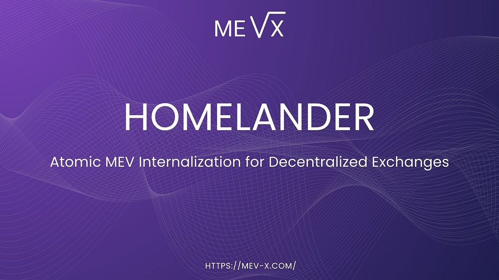
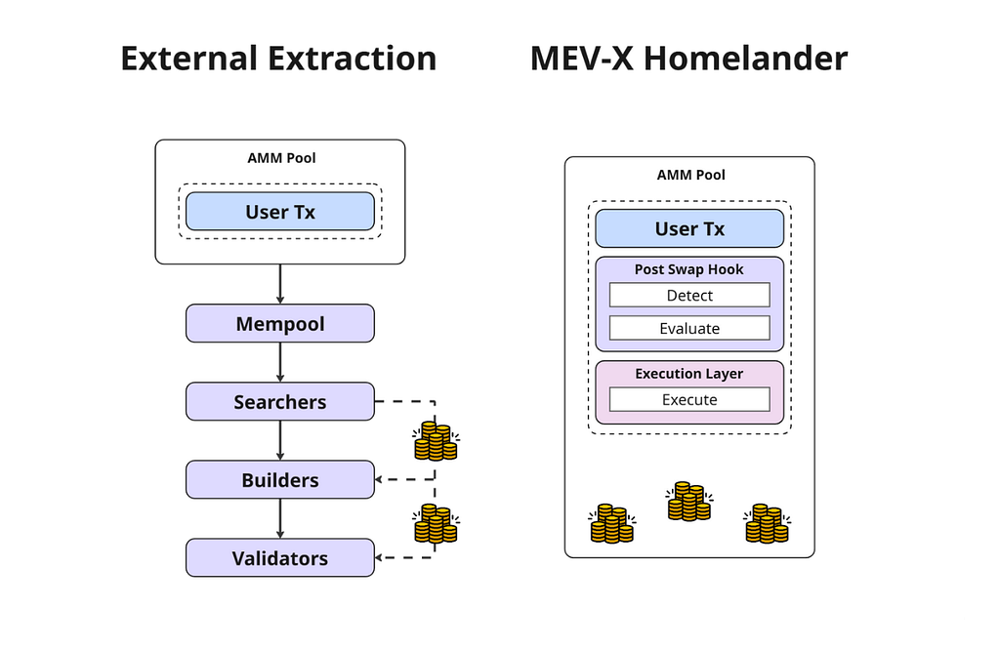
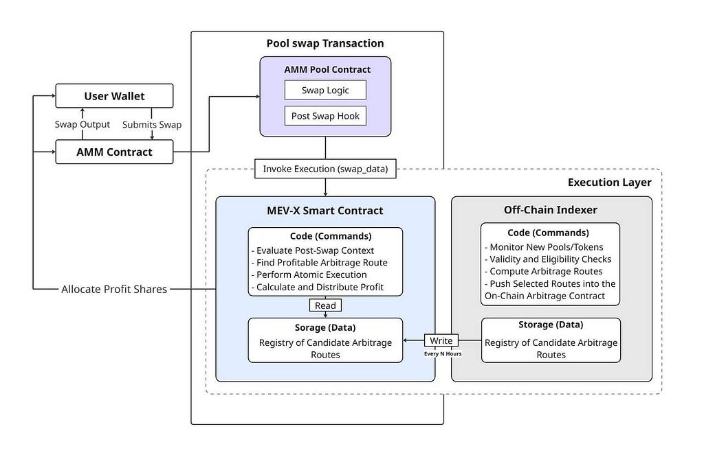

Meet Homelander: an atomic MEV internalization system for DEXs.
We’re launching a new approach to MEV — a system designed to bring execution back to where the value originates.

MEV Internalization
User trades introduce short, predictable price shifts as liquidity pools adjust to a new state. These shifts create narrow arbitrage windows that, once visible on-chain, are quickly incorporated into block construction. The resulting backrun transactions extract value directly from the pricing changes caused by the user’s swap.
In the current model, this value does not remain within the exchange. Instead, it is routed outward through the block-building pipeline and ultimately captured by validators and block builders. The AMM generates the underlying surplus but retains none of it, while external infrastructure participants capture the full upside.
MEV internalization refers to resolving these post-swap arbitrage opportunities inside the same transaction that creates them, before the updated state becomes visible to the broader network. By executing and settling the value locally, the exchange retains the surplus generated by its own liquidity instead of allowing it to flow to validators and block builders. In effect, the protocol keeps the value produced by its own swaps rather than exporting it to external infrastructure.
MEV-X Homelander
Homelander implements MEV internalization through a post-swap hook that activates immediately after the AMM updates its reserves. When the hook fires, it passes the final post-swap state to Homelander’s execution layer, which evaluates whether the updated balances create a viable arbitrage path. If a profitable opportunity exists, the system executes and settles the backrun inside the same transaction that produced it.
Extraction occurs atomically within the originating transaction, keeping the entire sequence of actions contained within the protocol’s own execution path. The opportunity remains local to the AMM, and all steps from state inspection to settlement complete before the swap returns its final output.
The system works as a unified workflow: the hook signals the opportunity, and the execution layer completes the capture. All complex tasks such as opportunity detection, routing, and transaction orchestration are handled by our engine, which keeps integration minimal. By consolidating these steps in a controlled execution environment, the system retains the value generated by user activity without affecting the trading experience or adding operational overhead.
By keeping the surplus that would otherwise be captured by validators and block builders, Homelander ensures that the value generated by user activity remains within the exchange’s own economic boundary. Recovered profit can be allocated based on the platform’s priorities through a configurable distribution model, creating a native on-chain revenue channel without requiring additional MEV infrastructure.

Architecture Overview
Homelander operates entirely within the lifecycle of a single swap transaction, using the post-swap state to evaluate and, when appropriate, execute internal arbitrage. Its operation is governed by the following core properties:
- Atomicity: backrun execution and settlement occur within the same transaction as the initiating swap;
- Zero mempool exposure: no step of the process is broadcast or observable externally;
- No reentrancy risk: execution conforms to AMM-defined callback safety constraints;
- Full compatibility: integrates with AMM architectures that support post-swap hooks without modifying their internal logic.
The system consists of three primary components that work together to identify, execute, and settle arbitrage opportunities created by user trades. These components form a closed execution path that operates independently of external searchers and without modifying AMM mechanics.
1. Post-Swap Hook Layer
The hook integrates at the pool level through the AMM’s native post-swap callback. Architectures such as Uniswap v4, Algebra Integral, and PancakeSwap Infinity expose hooks that run immediately after a swap updates balances. When triggered, the hook passes the post-swap state to the execution layer in a deterministic, non-reentrant manner, without modifying pool logic or user-facing behavior.
2. Execution Layer
The execution layer processes the post-swap state and determines whether it allows a profitable backrun under the system’s route, token, and safety constraints. It operates strictly within the transaction boundary and, when conditions are met, constructs and atomically executes the internal swap sequence. If no viable opportunity exists, the process reverts without affecting the user’s swap.
3. Settlement Path
Once arbitrage execution completes, the settlement path computes the net surplus and applies the configured distribution model, assigning returns to the specified recipients. Transfers use standard ERC-20 flows and finish before the outer transaction completes, keeping settlement fully contained within the same execution context.

Homelander is integrated by directing the AMM’s post-swap callback to the MEV-X entrypoint. This is the only action required to activate the system: once connected, the callback operates automatically. After the callback is linked to MEV-X, the internal MEV capture process runs autonomously and does not require ongoing intervention or changes to existing workflows.
Protocol-Level Impact
Homelander closes the gap between where MEV is created and where it is captured. By internalizing arbitrage at the transaction level, the system retains value, simplifies execution, and enhances the economic efficiency of AMMs adopting post-swap hooks. Instead of depending on external infrastructure, the exchange gains a direct and deterministic way to keep the surplus generated by its own liquidity.
With a single integration at the post-swap hook, a DEX activates a fully managed pipeline built by MEV-X: handling opportunity detection, route computation, and on-chain execution. Homelander brings MEV back home, to the protocol that creates it.